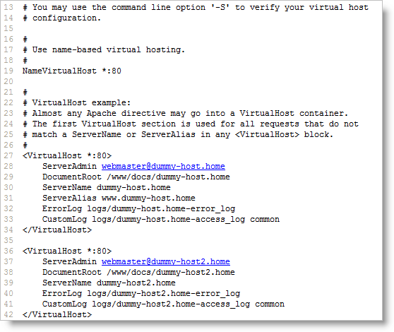

Configurando virtual host no Apache
Use o Apache para transformar seu OS num ambiente capaz de lidar com inúmeros sites
O que é um virtual host?Virtual hosts são websites com diferentes nomes que rodam todos num mesmo servidor. A idéia é que o Apache sabe qual site você quer acessar, mesmo que todos estejam no mesmo servidor, e lhe devolve o conteúdo do site correto.
É este truque que nos permite rodar diversos websites na mesma máquina, numa variedade de diferentes nomes de domínio, e diversos nomes dentro de um mesmo domínio, fazendo aquela pequena máquina atrás de um DSL parecer uma sala cheia de servidores.
Razões para se utilizar virtual hosts
Provavelmente você já consegue imaginar algumas utilidades. Para os desenvolvedores, por exemplo, o virtual host é muito útil para poder-se setar um domínio local especialmente para um projeto. O truque consiste em colocar nomes dentro dos nossos DNS internos, assim estes hosts internos podem enxergar os websites, enquanto as redes externas não conseguem acessá-lo (mas isso também é possível, porém, é assunto para outro artigo).
Há inúmeras vantagens em trabalhar assim. É possível, por exemplo, setar a estrutura de pastas no site exatamente da mesma forma como ele estará no servidor real, quando o projeto já estiver publicado. Isso evita aquele problema muito comum entre os desenvolvedores: quando se tem um site na máquina de desenvolvimento numa estrutura de diretórios completamente adversa à estrutura final.
E, ademais, não há necessidade de se ter um novo servidor para cada site, não importa quantos projetos você esteja desenvolvendo, todos eles permanecem separadinhos no mesmo servidor. Esta é a razão mais recorrente para se utilizar dos virtual hosts.
Por fim, e o mais importante de tudo, o bom SEO sabe que conhecer e saber lidar com o potencial oferecido pelo servidor de produção ajudará a descobrir como extrair todo o proveito possível dele, resultando numa otimização de site mais efetiva, baseada em conhecimentos técnicos da linguagem de programação e do servidor de interpretação.
Nesta primeira matéria, veremos como configurar os virtual hosts num ambiente Windows. Mais tarde, os usuários Linux também serão contemplados com um artigo a respeito.
Criando virtual hosts no Apache 2.2
Este tutorial tem como escopo apenas o ambiente de testes num ambiente Windows. Para o servidor no ambiente de produção, por favor, leia a documentação oficial no site do Apache.
O Apache 2.2 adota um método modular similar ao seu arquivo de configuração principal, o httpd.conf. Apesar de ser permitido colocar-se tudo num único e enorme arquivo, é mais eficiente utilizar arquivos externos, e incluir somente aqueles que você vai utilizar para implementar. Consequentemente, não é mais recomendado definir virtual hosts no rodapé do arquivo httpd.conf. Ao invés disso, você deve incluir um arquivo externo chamado httpd-vhosts.conf.
Outra mudança é que o Apache 2.2 impõe permissões mais restritas do que as versões anteriores deste servidor, por isso é necessário adicionar um comando extra na definição de virtual hosts para evitar-se a seguinte mensagem quando se acessa um virtual host:
* Forbidden
You don't have permission to access /index.php on this server.
You don't have permission to access /index.php on this server.
Por conta de questões de permissão, eu recomendo criar-se uma pasta na raiz para guardar todos os virtual hosts em seu ambiente de desenvolvimento. As seguintes instruções assumem que todos os virtuais hosts estão localizados numa pasta chamada C:\vhosts:
1. Crie um subdiretório dentro de C:\vhosts para cada virtual host que você quiser adicionar em seu servidor Apache.
2. Abra C:\WINDOWS\system32\drivers\etc\hosts no Bloco de Notas (Notepad) ou qualquer outro editor de scripts. Localize a seguinte linha no final do arquivo:
127.0.0.1 localhost
3. Numa linha separada, entre com 127.0.0.1, seguido por espaço e o nome do virtual host que deseja registrar. Por exemplo, para setar um virtual host chamado seonow, entre com o seguinte:
127.0.0.1 seonow
4. Adicione quantos virtual hosts desejar, cada um deles numa linha e apontando para o mesmo endereço de IP (127.0.0.1). Salve e feche o arquivo.
5. Abra o arquivo httpd.conf do Apache num editor qualquer. No meu caso, ele estava em C:\Arquivos de Programa\Apache Software Foundation\Apache2.2\conf\httpd.conf. Dentro dele, localize a seção de configuração entitulada "Supplemental", no final, e observe a seguinte linha (no meu httpd.conf está na linha 460):
#Virtual hosts
#Include conf/extra/httpd-vhosts.conf
#Include conf/extra/httpd-vhosts.conf
6. Remova o # da segunda linha para habilitar a funcionalidade. Ficará assim:
#Virtual hosts
Include conf/extra/httpd-vhosts.conf
Include conf/extra/httpd-vhosts.conf
7. Salve e feche o arquivo httpd.conf.
8. Abra o arquivo httpd-vhosts.conf (no meu computador, ele estava em C:\Arquivos de Programa\Apache Software Foundation\Apache2.2\conf\extra\httpd-vhosts.conf). A seção principal se parece com a imagem abaixo:

9. Posicione seu cursor no espaço vazio mostrado na linha 15 da imagem acima, e insira as seguintes linhas de código:
<Directory C:/vhosts>
Order Deny,Allow
Allow from all
</Directory>
Order Deny,Allow
Allow from all
</Directory>
Este código seta as permissões corretas para a pasta que contém os sites que você quer tratar como virtual hosts. Se você escolher uma localização diferente de C:\vhosts como a pasta principal, substitua o caminho na primeira linha. Note que o caminho digitado utiliza barra normal, ao invés da barra invertida normalmente usada pelo ambiente Windows. Caso seu caminho possua espaços em branco, digite-o entre aspas. Exemplo: se o seu caminho para vhosts for "C:\Meus Documentos\vhosts", seu script ficaria assim:
<Directory "C:/Meus documentos/vhosts">
Order Deny,Allow
Allow from all
</Directory>
Order Deny,Allow
Allow from all
</Directory>
Assim que seus virtual hosts estiverem todos nos subdiretórios da pasta principal, esta diretiva setará as permissões corretas para todos eles. Entretanto, se eles estiverem em pastas diferentes, crie um <Directory> separado para cada um.
10. O código mostrado da linha 27 à linha 42 na impressão de tela acima, mostra exemplos de como definir os virtual hosts. Nela, é possível conferir todos os comandos que podem ser usados, mas somente DocumentRoot e ServerName são requeridos.
Ao habilitar o virtual hosting, o Apache desabilita a raiz principal do servidor, assim a primeira definição precisa reproduzir a raiz original do servidor. Depois, adicione cada novo virtual host dentro das tags <VirtualHost> e </VirtualHost>, utilizando a localização dos arquivos do site como o valor do DocumentRoot, e o nome do virtual host para o ServerName. Nunca é demais lembrar, use a barra comum, e caso o caminho contenha espaços em branco, coloque-o dentro de aspas. Caso a raiz do seu servidor esteja localizado, como a minha, em C:\htdocs, e você estiver adicionando seonow como um virtual host em C:\vhosts, mude o código mostrado das linhas 27 à 42 para algo assim:
<VirtualHost *:80>
DocumentRoot c:/htdocs
ServerName localhost
</VirtualHost>
<VirtualHost *:80>
DocumentRoot c:/vhosts/seonow
ServerName phpdw
</VirtualHost>
DocumentRoot c:/htdocs
ServerName localhost
</VirtualHost>
<VirtualHost *:80>
DocumentRoot c:/vhosts/seonow
ServerName phpdw
</VirtualHost>
11. Salve o arquivo httpd-vhosts.conf e reinicie o computador. Todos os sites na raiz do servidor continuarão acessáveis através de http://localhost/nome-do-site/. Qualquer projeto setado como virtual host estará acessável através de um endereço direto, como http://seonow/.
12. Caso ainda enfrente dificuldades em acessar seus virtual hosts, certifique-se se que adicionou um arquivo "index.php" na diretiva DirectoryIndex do arquivo httpd-conf.
Num artigo futuro, veremos como o conceito de virtual hosts será útil na otimização de websites.
Até lá.
Taglines: virtual hosts, apache, ambiente windows, httpd.conf, httpd-vhosts.conf
COMENTE AGORA


Mais notícias
- [18/06/09 as 13:36] Trabalhando com URL Amigável - Parte 2
- [10/06/09 as 13:04] Trabalhando com URL Amigável
- [28/05/09 as 17:57] Otimize suas palavras-chaves de forma inteligente
- [20/01/09 as 11:09] Mil e uma utilidades do htaccess
- [18/10/08 as 17:10] Utilizando sitemap para indexação no Google
- [11/10/08 as 19:13] Conheça os conceitos básicos para a otimização do seu site
- [24/01/09 as 08:39] Configurando virtual host no Apache
- [11/10/08 as 19:14] Google diz que o melhor SEO ainda é o bom texto
- [13/09/08 as 16:13] Ajude-se apontando links internos para sua própria homepage
- [13/09/08 as 17:47] A importância da coerência entre títulos e conteúdos